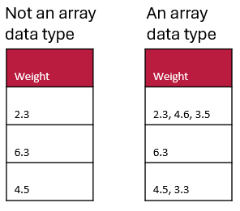

On the attribute details page, you can edit properties of each attribute present in your schema.
You can edit each attribute name and reorder the attributes.
Sensitive attributes are where you can specify Sensitive Attribute for sensitive data (e.g., names of people, government identification, birth date, etc.). Marking an entry with a check will allow you to flag any attributes where identifying information about entities may be captured.
Units are where you can describe the units for each attribute if needed.
Here is an example of a numeric array data type to help you decide if you have an array data type or not.
To understand lists (aka entry codes) better you can find a worked example on our blog post about entry codes.
A list is a very useful feature that allows the schema author to limit the data that can be entered for a specific attribute. Select this option if you would like to create a list of acceptable entries that the user will be able to select from.
If the user is able to select only one valid entry from the list (e.g., a list where the user will select the sample location), your data type will be something suitable like "Text" or "Numeric". If you will allow multi-selection from the list (e.g., a list where the user can select all that apply), then your data type is an array.